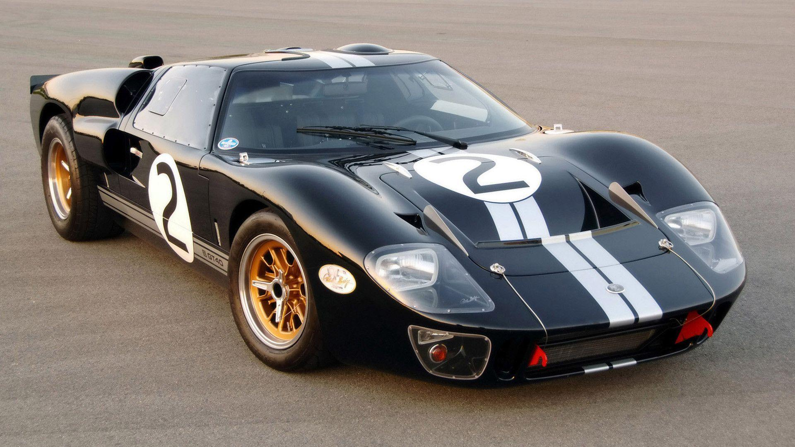

The Ford GT40 is a high-performance mid-engined racing car originally designed and built for and by the Ford Motor Company to compete in 1960s European endurance racing and the World Sportscar Championship. Its specific impetus was to beat Scuderia Ferrari, which had won the prestigious 24 Hours of Le Mans race for six years running from 1960 to 1965. As rules of the time required that GT cars were built in dozens and sold, around 100 cars in total have been made, mostly as 289 cu in (4.7 L) V8-powered Mk Is, of which at least 50 were made in 1965, which allowed FIA-homologation[5] as Group-4-Sportscar for 1966 until 1971. This gave the old MK.I car of Gulf-Wyer the chance to enter and win Le Mans in 1968 and 1969 after prototypes had been limited to 3 litre, with the performance of the Ford 7-litre-V8 in the factory 1966 Mk.II and 1967 Mk.IV prototypes causing this rule change, which also banned the 4-litre V12 Ferrari 330P4 and others after 1967. The Mk.III designation was used for some road-legal cars.
 detaluri informacia